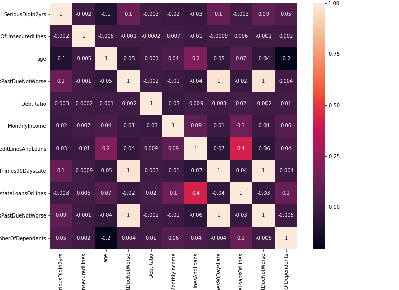

About Us
You need mo’ money, but will you get it? We help you figure it out.
How We Do
We took a dataset describing 150K loans. It gave info about the borrowers like age, monthly income, and number of dependents. It also told us if the borrower couldn’t pay back the loan within 2 years. We used this to build a model that predicts whether or not a bank will give you a loan.
The Down and Dirty
Even the best machine learning models suffer if the data is riding dirty. You gotta make it fresh son. Important note (we about to get technical): we evaluated our models based on AUC. Because loan defaults were so rare in the dataset, the model would have 93% accuracy if it always predicted ‘no default’.
Because of this class imbalance, we plotted an ROC curve and calculated AUC to assess model performance. This is the ROC curve of a logistic regression model, before cleaning:
Step 1: Null Values + Outliers
- Dropping entire rows of data gives us less data to play wit
- Instead we replaced that data using averages or medians (for income, we averaged by age).
- This is the ROC curve of a logistic regression model, after cleaning:

Step 2: Data Engineering
- Tried to create new features based on common sense (using the info we already got).
- Played around with creating features by assuming importance.
- This is the ROC curve of a logistic regression model, after cleaning:

Step 3: Multicollinearity (wat?!)
- Checked to see if any of our features were too similar
- Removed ones that were
Feature correlation heatmap before cleaning, engineering, and feature removal:
Feature correlation heatmap after cleaning, engineering, and feature removal:

Step 4: Standardize
- Split the data so we had a training and testing set
- Scale that data so we could push it through the model
Step 5: Fit It
- Tested a couple different models to see which had the best AUC score
- Found the best AUC score came from averaging probabilities of two models:


Step 6: Predict It
- Use those two models to let you know if you qualify based on the info you provide